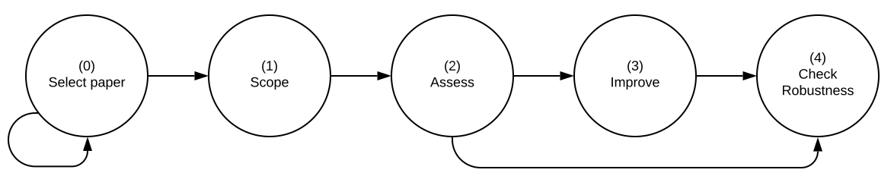

Guide for Accelerating
Computational Reproducibility in the Social Sciences
2022-09-16
See a full list of contributors
A companion to the Social Science Reproduction Platform.

|
• Select paper
|
|||||
|---|---|---|---|---|---|
|
• Declare/Discard paper
|
|||||
## You will only see me in HTML output.```{= latex, eval=knitr::is_latex_output(), echo=FALSE} if (knitr::is_latex_output()) {
}
This work is licensed under the Creative Commons Attribution-NonCommercial 4.0 International License. To view a copy of this license, visit http://creativecommons.org/licenses/by-nc/4.0/.
<!--chapter:end:index.Rmd-->
---
output:
pdf_document: default
html_document: default
---
# Introduction {-#intro}
*Computational reproducibility* is the degree to which it is possible to obtain consistent results using the same input data, computational methods, and conditions of analysis [@national2019reproducibility]. In 2019, the [American Economic Association](https://www.aeaweb.org/journals/policies/data-code/) updated its Data and Code Availability Policy to require that the AEA Data Editor verify the reproducibility of all papers before they are accepted by an AEA journal. Similar policies have been adopted in political science, particularly at the [*American Journal of Political Science*](https://ajps.org/ajps-verification-policy/). In addition to the requirements laid out in such policies, the data editors of several social science journals produced detailed [recommendations and resources](https://social-science-data-editors.github.io/guidance/) to facilitate compliance. The goal of such policy changes is to improve the computational reproducibility of *all* published research going forward, after several studies showed that rates of computational reproducibility in the social sciences range from somewhat low to alarmingly low [@galiani2018make; @chang2015economics; @kingi2018reproducibility].
This Guide includes a common approach, terminology, and standards for conducting *reproductions*, or attempts to assess and improve the computational reproducibility of published work. At the center of this process is the *reproducer* (you!), a party rarely involved in the production of the original paper. Reproductions sometimes involve the *original author* (whom we refer to as "the author") in cases where additional guidance and materials are needed to execute the process. Reproductions should be distinguished from *replications*, where replicators re-examine a study's hypotheses using *different data* or *different methods* (or both) [@King95]. We find that reproducibility is necessary for replicability, though both allow science to be "self-correcting."
We recommend using this Guide in conjunction with the [**Social Science Reproduction Platform**](https://www.socialsciencereproduction.org/) (SSRP), an open-source platform that crowdsources and catalogs attempts to assess and improve the computational reproducibility of published social science research. Though in its current version, the Guide is primarily intended for reproductions in economics, it may be used in other social science disciplines, and we welcome contributions that aim to "translate" any of its parts to other social science disciplines (learn how you can contribute [here](https://bitss.github.io/ACRE/contributions.html)). Find definitions of fundamental concepts in reproducibility and the process of conducting reproductions in the [Glossary](https://bitss.github.io/ACRE/definitions.html) chapter.
This Guide and the SSRP were developed as part of the Accelerating Computational Reproducibility [(ACRe)](https://www.bitss.org/ecosystem/acre/) project, which aims to assess, enable, and improve the computational reproducibility of published social science research. The ACRe project is led by the Berkeley Initiative for Transparency in the Social Sciences [(BITSS)](https://bitss.org)—an initiative of the Center for Effective Global Action [(CEGA)](https://cega.berkeley.edu/)—and [Dr. Lars Vilhuber](https://www.vilhuber.com/lars/), Data Editor for the journals of the American Economic Association (AEA). This project is supported by [Arnold Ventures](https://www.arnoldventures.org/).
[View slides used for the presentation "How to Teach Reproducibility in Classwork"](https://bitss.github.io/WEAI2020_slides/)
<!--
add clarebout principle and discuss effect on a more inclusive scientific community
-->
## Beyond binary judgments {-}
Assessments of reproducibility can easily gravitate towards binary judgments that declare an entire paper as "(ir-)reproducible". We suggest a more nuanced approach based on two observations that make binary judgments less relevant.
First, a paper may contain several scientific claims (or major hypotheses) that may vary in computational reproducibility. Each claim is tested using different methodologies, presenting results in one or more display items (outputs like tables and figures). Each display item will itself contain several specifications. Figure \@ref(fig:diagram) illustrates this idea.
<div class="figure">
<img src="paper-claims.png" alt="One paper has multiple components to reproduce. <br> DI: Display Item, S: Specification " width="100%" />
<p class="caption">(\#fig:diagram)One paper has multiple components to reproduce. <br> DI: Display Item, S: Specification </p>
</div>
Second, for any given specification, there are several reproducibility levels, ranging from the absence of any materials to complete reproducibility starting from raw data. Moreover, even for a specific claim-specification combination, distinguishing the appropriate level can be far more constructive than simply labeling it as (ir-)reproducible.
Note that the highest level of reproducibility, which requires complete reproducibility starting from raw data, is very demanding and should not be expected of all published research — especially before 2019. Instead, this level can serve as an aspiration for social science research, as we look to improve the reproducibility of research and facilitate the transmission of knowledge throughout the scientific community.
## Reproduction stages {-}
Reproductions can be divided into five stages, corresponding to the first five chapters of this guide:
0. [**Paper selection**](#select), where you will select a *candidate* paper and try to locate its *reproduction package*. If a reproduction package is available, you will *declare* the paper and start the reproduction, or select a new candidate paper (after leaving a record on the SSRP);
1. [**Scoping**](#scoping), where you will define the scope of the exercise by recording the claims, display items, and specifications you will focus on in the remainder of the reproduction;
2. [**Assessment**](#assessment), where you will review and describe in detail the available reproduction package and assess the current level of computational reproducibility of the selected display items;
3. [**Improvement**](#improvements), where you will modify the content and/or the organization of the reproduction package to improve its reproducibility;
4. [**Robustness**](#robust), where you will identify analytical choices to increase the number of feasible robustness checks, and/or you will justify the reasonableness of a specific robustness check.
This Guide does not include a possible fifth stage of **extension**, where you may extend the current paper by including new methodologies or data, which would bring the exercise closer to a *replication*.
<div class="figure">
<img src="stages.svg" alt="Four stages of a reproduction attempt" width="100%" />
<p class="caption">(\#fig:stages-intro)Four stages of a reproduction attempt</p>
</div>
The order of the stages may not be chronologically linear. For example, you may realize that the scope of a reproduction is too ambitious and switch to a less intensive one. Later in the exercise, you can also begin testing different specifications for robustness while also assessing the paper's reproducibility level. The only stage that should go first, and cannot be edited once finished, is the Scoping stage.
Different stages in the reproduction process correspond to different units of analysis (see Figure \@ref(fig:stages-unit) for an overview). The Scoping stage will focus on scientific *claims* selected for reproduction. Once you specify your claims of interest, in the Assessment and Improvement stages you will focus on the display items associated with those claims. In the Robustness stage, claims are once again the unit of analysis.
<div class="figure">
<img src="unit-of-analysis.png" alt="Relevant unit of analysis at each stage of a reproduction attempt" width="100%" />
<p class="caption">(\#fig:stages-unit)Relevant unit of analysis at each stage of a reproduction attempt</p>
</div>
## Reproduction strategies {-}
In most cases, you will begin a reproduction with a thorough reading of your paper of interest. However, the sequence of the steps you take in the remainder of the reproduction may follow various reproduction strategies. The most obvious strategy would be to follow the order of the steps as outlined above. You may also first choose one of the paper's many claims and then focus on assessing and improving the reproduction package accordingly. Using an alternative strategy, you might identify potential robustness checks or extensions while reading the paper and then focus only on the results associated with that robustness check. In another strategy, you may identify a paper that uses a particular dataset in which you are interested and then only reproduce or conduct robustness checks for the results associated with that dataset.
<!--chapter:end:01-intro.Rmd-->
# Selecting a paper {#select}
The goal of this stage is to help you select the paper that you will do your reproduction on. You might first consider multiple papers without analyzing them more closely (we refer to these as **candidate papers**) before moving forward with your **declared paper**.
The main difference between a candidate and a declared paper is the availability of a reproduction package. A **reproduction package** is the collection of materials that make it possible to reproduce a paper. This package may contain data, code, or documentation. If you are unable to independently locate the reproduction package for your paper, you can ask the paper's author for it (find guidance on this in [Chapter 7](https://bitss.github.io/ACRE/guidance-for-a-constructive-exchange-between-reproducers-and-original-authors.html)) or simply choose another candidate paper. If you still want to explore the reproducibility of a paper with no reproduction package, these guidelines provide instructions for requesting materials from authors to create a public reproduction package, or if this proves unsuccessful, for building your reproduction package from scratch.
To avoid duplicating the efforts of others who may be interested in reproducing one of your candidate papers, **we ask that you record your candidate papers in the SSRP**.
Note that in this stage, *you are not expected to review the reproduction materials in detail*, as you will dedicate most of your time to this in later stages of the exercise.
## From candidate to declared paper {#declare}
At this point of the exercise, you are *only verifying the availability* of (at least) one reproduction package and not assessing the quality of its content. Follow the steps below to verify that a reproduction package is available, and stop whenever you find it (this may mean that you have found your declared paper).
1. Check whether previous reproduction attempts have been recorded in the [SSRP](https://www.socialsciencereproduction.org/) for the paper.
2. Check the journal or publisher's website, looking for materials named "Data and Materials," "Supplemental Materials," "Reproduction/Replication Package/Materials," etc.
3. Look for links in the paper (review the footnotes and appendices).
4. Review the personal websites of the paper's author(s).
5. Contact the author(s) to request the reproduction package using [this](#contacting-the-original-authors-when-there-is-no-reproduction-package) email template. In this and future interactions with authors, we encourage you to follow our guidance outlined in [Chapter 7](#contacting-the-original-authors-when-there-is-no-reproduction-package).
6. Deposit the reproduction package in a trusted repository (e.g., [Dataverse](https://dataverse.org/), [Open ICPSR](https://www.openicpsr.org/openicpsr/), [Zenodo](https://zenodo.org/), or the [Open Science Framework](https://osf.io/)) under the name `Original reproduction package for - Title of the paper`. You will be asked to provide the URL of the repository in Survey 1.
In case you need to contact the authors, make sure to *allocate sufficient time for this step* (we suggest at least three weeks before the date you plan to start the reproduction). Instructors should also plan to accordingly (e.g., if the ACRE exercise is expected to take place in the middle of the semester, students should review candidate papers and (if applicable) contact the authors in the first few weeks of the semester).
Review the decision tree (Figure \@ref(fig:candidate-paper-dec-tree)) below for a more detailed overview of this process. Remember, *if at any step of the process you decide to abandon the paper, make sure to record the candidate paper in the SSRP* before moving on to another candidate paper. Once you have obtained the reproduction package, the *candidate paper* becomes your *declared paper* and you can move forward with the exercise! Do not invest time in doing a detailed read of any paper until you are sure that it is your declared paper.
### Candidate paper entries in the SSRP {#check-acre}
If the SSRP contains previous reproduction attempts of the paper, you will see a report card with the following information:
>**Box 1:** Summary Report Card for SSRP Paper Entry
> **Title:** Sample Title
> **Authors:** Jane Doe & John Doe
> **Original Reproduction Package Available:** Yes (link)/No.
> [If "No"] **Contacted Authors?:** Yes/No
> [If "Yes(contacted)"] **Type of Response:** Categories (6).
> **Additional Reproduction Packages:** Number (eg., 2)
> **Authors Available for Further Questions for SSRP Reproductions:** Yes/No/Unknown
If after taking steps 1-5 above (or for some other reason) you are unable to locate the reproduction package, record your candidate paper (and if applicable, the outcome of your correspondence with the original authors) in the SSRP database following the example above.
<div class="figure">
<img src="candidate-to-declared-paper.png" alt="Decision tree to move from candidate to declared paper" width="80%" />
<p class="caption">(\#fig:candidate-paper-dec-tree)Decision tree to move from candidate to declared paper</p>
</div>
## Identifying the relevant timeline {#identify-timeline}
Before you begin working on the four main stages of the reproduction exercise (Scoping, Assessment, Improvement, and Robustness), it is important to manage your own expectations and those of your instructor or advisor. Be mindful of your time limitations when defining the scope of your reproduction activity. These will depend on the type of exercise chosen by your instructor or advisor and may vary from a weeklong homework assignment, to a semester-long project (an undergraduate thesis, for example).
Table 1 shows an example distribution of time across three different reproduction formats. The Scoping and Assessment stages are expected to last roughly the same amount of time across all formats (lasting longer for the semester-long activities as less experienced researchers, such as undergraduate students, may need more time). Differences emerge in the distribution of time for the last two main stages: Improvements and Robustness. For shorter exercises, we recommend avoiding any possible improvements to the raw data (or cleaning code). This will limit how many robustness checks are possible (for example, by limiting your ability to reconstruct variables according to slightly different definitions), but it should leave plenty of time for testing different specifications at the analysis level.
<table class="table lightable-paper" style='margin-left: auto; margin-right: auto; font-family: "Arial Narrow", arial, helvetica, sans-serif; margin-left: auto; margin-right: auto;'>
<thead>
<tr>
<th style="empty-cells: hide;" colspan="1"></th>
<th style="padding-bottom:0; padding-left:3px;padding-right:3px;text-align: center; " colspan="2"><div style="border-bottom: 1px solid #00000020; padding-bottom: 5px; ">2 weeks<br>(~10 days)</div></th>
<th style="padding-bottom:0; padding-left:3px;padding-right:3px;text-align: center; " colspan="2"><div style="border-bottom: 1px solid #00000020; padding-bottom: 5px; ">1 month<br>(~20 days)</div></th>
<th style="padding-bottom:0; padding-left:3px;padding-right:3px;text-align: center; " colspan="2"><div style="border-bottom: 1px solid #00000020; padding-bottom: 5px; ">1 semester<br>(~100 days)</div></th>
</tr>
<tr>
<th style="padding-bottom:0; padding-left:3px;padding-right:3px;text-align: center; " colspan="1"><div style="border-bottom: 1px solid #00000020; padding-bottom: 5px; ">Stages of<br> Reproduction</div></th>
<th style="padding-bottom:0; padding-left:3px;padding-right:3px;text-align: center; " colspan="1"><div style="border-bottom: 1px solid #00000020; padding-bottom: 5px; ">analysis<br>data</div></th>
<th style="padding-bottom:0; padding-left:3px;padding-right:3px;text-align: center; " colspan="1"><div style="border-bottom: 1px solid #00000020; padding-bottom: 5px; ">raw<br>data</div></th>
<th style="padding-bottom:0; padding-left:3px;padding-right:3px;text-align: center; " colspan="1"><div style="border-bottom: 1px solid #00000020; padding-bottom: 5px; ">analysis<br>data</div></th>
<th style="padding-bottom:0; padding-left:3px;padding-right:3px;text-align: center; " colspan="1"><div style="border-bottom: 1px solid #00000020; padding-bottom: 5px; ">raw<br>data</div></th>
<th style="padding-bottom:0; padding-left:3px;padding-right:3px;text-align: center; " colspan="1"><div style="border-bottom: 1px solid #00000020; padding-bottom: 5px; ">analysis<br>data</div></th>
<th style="padding-bottom:0; padding-left:3px;padding-right:3px;text-align: center; " colspan="1"><div style="border-bottom: 1px solid #00000020; padding-bottom: 5px; ">raw<br>data</div></th>
</tr>
<tr>
<th style="padding-bottom:0; padding-left:3px;padding-right:3px;text-align: center; " colspan="1"><div style="border-bottom: 1px solid #00000020; padding-bottom: 5px; ">Scoping</div></th>
<th style="padding-bottom:0; padding-left:3px;padding-right:3px;text-align: center; " colspan="2"><div style="border-bottom: 1px solid #00000020; padding-bottom: 5px; ">10% (1 day)</div></th>
<th style="padding-bottom:0; padding-left:3px;padding-right:3px;text-align: center; " colspan="2"><div style="border-bottom: 1px solid #00000020; padding-bottom: 5px; ">10% (2 day)</div></th>
<th style="padding-bottom:0; padding-left:3px;padding-right:3px;text-align: center; " colspan="2"><div style="border-bottom: 1px solid #00000020; padding-bottom: 5px; ">10% (10 days)</div></th>
</tr>
<tr>
<th style="padding-bottom:0; padding-left:3px;padding-right:3px;text-align: center; " colspan="1"><div style="border-bottom: 1px solid #00000020; padding-bottom: 5px; ">Assesment</div></th>
<th style="padding-bottom:0; padding-left:3px;padding-right:3px;text-align: center; " colspan="2"><div style="border-bottom: 1px solid #00000020; padding-bottom: 5px; ">35%</div></th>
<th style="padding-bottom:0; padding-left:3px;padding-right:3px;text-align: center; " colspan="2"><div style="border-bottom: 1px solid #00000020; padding-bottom: 5px; ">25%</div></th>
<th style="padding-bottom:0; padding-left:3px;padding-right:3px;text-align: center; " colspan="2"><div style="border-bottom: 1px solid #00000020; padding-bottom: 5px; ">15%</div></th>
</tr>
<tr>
<th style="padding-bottom:0; padding-left:3px;padding-right:3px;text-align: center; " colspan="1"><div style="border-bottom: 1px solid #00000020; padding-bottom: 5px; ">Improvement</div></th>
<th style="padding-bottom:0; padding-left:3px;padding-right:3px;text-align: center; " colspan="1"><div style="border-bottom: 1px solid #00000020; padding-bottom: 5px; ">25%</div></th>
<th style="padding-bottom:0; padding-left:3px;padding-right:3px;text-align: center; " colspan="1"><div style="border-bottom: 1px solid #00000020; padding-bottom: 5px; ">0%</div></th>
<th style="padding-bottom:0; padding-left:3px;padding-right:3px;text-align: center; " colspan="2"><div style="border-bottom: 1px solid #00000020; padding-bottom: 5px; ">40%</div></th>
<th style="padding-bottom:0; padding-left:3px;padding-right:3px;text-align: center; " colspan="1"><div style="border-bottom: 1px solid #00000020; padding-bottom: 5px; ">20%</div></th>
<th style="padding-bottom:0; padding-left:3px;padding-right:3px;text-align: center; " colspan="1"><div style="border-bottom: 1px solid #00000020; padding-bottom: 5px; ">30%</div></th>
</tr>
<tr>
<th style="padding-bottom:0; padding-left:3px;padding-right:3px;text-align: center; " colspan="1"><div style="border-bottom: 1px solid #00000020; padding-bottom: 5px; ">Robustness</div></th>
<th style="padding-bottom:0; padding-left:3px;padding-right:3px;text-align: center; " colspan="1"><div style="border-bottom: 1px solid #00000020; padding-bottom: 5px; ">25%</div></th>
<th style="padding-bottom:0; padding-left:3px;padding-right:3px;text-align: center; " colspan="1"><div style="border-bottom: 1px solid #00000020; padding-bottom: 5px; ">5%</div></th>
<th style="padding-bottom:0; padding-left:3px;padding-right:3px;text-align: center; " colspan="2"><div style="border-bottom: 1px solid #00000020; padding-bottom: 5px; ">25%</div></th>
<th style="padding-bottom:0; padding-left:3px;padding-right:3px;text-align: center; " colspan="2"><div style="border-bottom: 1px solid #00000020; padding-bottom: 5px; ">25%</div></th>
</tr>
<tr>
<th style="text-align:left;"> </th>
<th style="text-align:left;"> </th>
<th style="text-align:left;"> </th>
<th style="text-align:left;"> </th>
<th style="text-align:left;"> </th>
<th style="text-align:left;"> </th>
<th style="text-align:left;"> </th>
</tr>
</thead>
<tbody>
<tr>
</tr>
</tbody>
</table>
## Potential sources of papers to prioritize {#identify-timeline}
### Prioritize based on higher likelihood of reproduction
To curate a list of target papers in *economics*, instructors can consult recently published articles in the journals of the [American Economic Association](https://www.aeaweb.org/journals) (AEA), especially articles published since 2019, which are more likely to contain reproduction packages given a change in the [AEA Data and Code Availability Policy](https://www.aeaweb.org/journals/data/data-code-policy) that took effect that year. In *political science*, target papers can be found in the *[American Journal of Political Science](https://ajps.org/ajps-verification-policy/)*, especially those published after 2016, which are also likely to contain reproduction packages. In other social science disciplines, instructors can focus on journals that score 2 or above in data, code, and materials transparency in the [Transparency and Openness Promotion (TOP) Factor](https://www.cos.io/initiatives/top-guidelines) (see scores [here](https://topfactor.org/)), maintained by the Center for Open Science.
### Prioritize based on proxies of paper impact within a field
Instructors and reproducers could prioritize papers based on their impact in their field. We suggest that an explicit criteria should be specified in order to define a pool of "high impact" papers. Here we demonstrate one such criteria for the field of Economics.
1. Go to [Google Scholar metrics](https://scholar.google.com/citations?view_op=metrics_intro&hl=en)
2. Select [top publications](https://scholar.google.com/citations?view_op=top_venues&hl=en)
3. Click on categories and select [Business, Economics & Management](https://scholar.google.com/citations?view_op=top_venues&hl=en&vq=bus). Then select in subcategories, select [Economics](https://scholar.google.com/citations?view_op=top_venues&hl=en&vq=bus_economics)
4. Exclude the Journal of Economics Perspectives (a review journal that does little computational analysis).
5. Focus on the 10 journals with highest h5-index. In August 4th, 2021, this yields:
- American Economic Review
- The Quarterly Journal of Economics
- The Review of Financial Studies
- Journal of Political Economy
- The Journal of Finance
- Econometrica
- The Review of Economic Studies
- Review of Economics and Statistics
- The Economic Journal
- Journal of Public Economics
6. For each journal click on the hyperlinked h5-index number (sort highest to lowest).
7. Select the first 10 articles in the list as sorted by citations. For example, for the *American Economic Review*, this procedure yields the following articles:
- [The Effects of Exposure to Better Neighborhoods on Children: New Evidence from the Moving to Opportunity Experiment](https://scholar.google.com/scholar?oi=bibs&cluster=14593109523353163362&btnI=1&hl=en)
- [Railroads of the Raj: Estimating the Impact of Transportation Infrastructure](https://scholar.google.com/scholar?oi=bibs&cluster=9632592800621257435&btnI=1&hl=en)
- [The Race between Man and Machine: Implications of Technology for Growth, Factor Shares, and Employment](https://scholar.google.com/scholar?oi=bibs&cluster=14882938779698367846&btnI=1&hl=en)
- [The Surprisingly Swift Decline of US Manufacturing Employment](https://scholar.google.com/scholar?oi=bibs&cluster=12934661864410944134&btnI=1&hl=en)
- [Monetary Policy According to HANK](https://scholar.google.com/scholar?oi=bibs&cluster=4926806483525389434&btnI=1&hl=en)
- [The Determinants and Welfare Implications of US Workers' Diverging Location Choices by Skill: 1980-2000](https://scholar.google.com/scholar?oi=bibs&cluster=2965198650429157010&btnI=1&hl=en)
- [Disruptive Change in the Taxi Business: The Case of Uber](https://scholar.google.com/scholar?oi=bibs&cluster=8446349612486899408&btnI=1&hl=en)
- [Bartik Instruments: What, When, Why, and How](https://scholar.google.com/scholar?oi=bibs&cluster=6025324097129642737&btnI=1&hl=en)
- [Importing Political Polarization? The Electoral Consequences of Rising Trade Exposure](https://scholar.google.com/scholar?oi=bibs&cluster=16547462466761479574&btnI=1&hl=en)
- [Long-Run Impacts of Childhood Access to the Safety Net](https://scholar.google.com/scholar?oi=bibs&cluster=4766165857030680369&btnI=1&hl=en)
8. Starting from the top: select a paper and read the abstract to verify that there is a computational analysis. Discard if there is not.
9. If there is, search [socialsciencereproduction.org](https://www.socialsciencereproduction.org/) to verify that there is a recorded reproduction.
10. If there is, you can create a new reproduction or move to the next paper in the list. If there is no reproduction recorded, create one.
<!--chapter:end:02-select.Rmd-->
# Scoping
At this stage, you will define the *scope of the reproduction* by identifying the *scientific claims* and related *display items* that you will analyze in the remainder of the reproduction. For this exercise, we follow the a comparable definition of a claim as used in the SCORE project, a related initiative aimed at predicting replicability and reproducibility of research:
>"A research claim is a single major finding from a published study, as well as details of the methods and results that support this finding. A research claim [may not be] equivalent to an entire article. Sometimes the claim as described in the abstract does not exactly match the claim that is tested. In this case, you should consider the research claim to be that which is described in the [results of the paper]".
>
> -- <cite>[RepliCATS Project](https://replicats.research.unimelb.edu.au/#tab301) </cite>
In the SSRP framework, different claims in a paper may be tested using different methodologies, and their results may be presented in one or more display items, such as tables and figures ([figure 0.1] illustrates this idea). Claims can have different structures, here we propose two high-level categories based on the most common structures:
- **Causal claim:** a claim is causal if it can be summarize using causal language. This language can be characterize by the following structure: "The paper estimates the effect of a variable *X* on outcome *Y* for population *P*, using method *M*". For example: "This paper investigates the impact of bicycle provision (X) on secondary school enrollment (Y) among young women in Bihar/India (P), using a Difference in Difference approach (M)."
- **Descriptive/predictive claim:** a claim is descriptive or predictive if it can be summarize using descriptive or predictive language. language can be characterize by the following structure: "The paper estimates the value of a variable *Y* (estimated or predicted) for population *P* under dimensions *X* (optional) using method *M*". For example, "Drawing on a unique Swiss data set (P) and exploiting systematic anomalies in countries' portfolio investment positions (M), I find that around 8% of the global financial wealth of households is held in tax havens (Y)."
A *display item* is a figure or table that presents the results described in the paper. Each display item may contain several specifications, or estimates that result from variations in specific analytical choices. If the display item of interest is a figure, the specification can be recorded as an number approximated by visual inspection of a particular point in the figure.
When recording the Scoping section on the SSRP platform, count all of the claims in the paper and provide a one sentence summary for the subset of claims that you will attempt to reproduce. Structure your summaries as follows: "The paper tested the effect of X on Y for population P, using method M. The main results show an effect of magnitude E (specify units and standard errors)" or "The paper estimated the value of Y (estimated or predicted) for population P under dimensions X using method M. The main results presented an estimate of of magnitude E (specify units and standard errors)". Make sure to use the same units of measurement for all scientific claims that you will analyze as part of the reproduction.
**Note:** Once you progress past the Scoping stage on the SSRP, *you will no longer be able to edit your responses in the Scoping stage*, though you will be able to see them. This is because the content of later stages of the reproduction is dependent on the information you record at this stage of the reproduction.
## Read and summarize the paper {#read-sum}
Depending on your reproduction's timeline, we recommend that you write a short (<1000 words) summary of the paper. Writing up such a summary will help you develop and demonstrate a wholesome understanding of the paper and its various components. In your summary, try to address the following:
- How many scientific claims can you identify in the paper?
- Would you classify the claims as causal, descriptive (e.g., estimating a population's descriptive statistic), or something else?
- What is the population that is the focus of the paper as a whole?
- What is the population for which the estimates apply?
- What are the primary data sources used in the paper?
- What is the primary statistical or econometric method used to examine each claim?
- What is the author's preferred specification (or yours, if the authors' is unclear)?
- What are some possible robustness checks for the preferred specification?
- How many display items are there in the paper (tables, figures, and inline results)?
Draft the summary in a plain text editor and paste the text in the form.
## Record a revised reproduction package
At the previous stage, you recorded the location of the original reproduction package made available by the paper's authors. Given that one of the main goals of the ACRe approach is to improve reproducibility, we recommend that you build an alternative reproduction package that will improve the reproducibility of specific display items or the paper as a whole.
You can start by downloading the original reproduction package (or *forking*, if on GitHub) and uploading a copy titled "Revised reproduction package for [Paper Citation, e.g. Smith et al. (2019)]" to a trusted repository. Examples of trusted repositories include [Dataverse](https://dataverse.org/), [openICPSR](https://www.openicpsr.org/openicpsr/), [Figshare](https://figshare.com), [Dryad](https://datadryad.org/stash), [Zenodo](https://about.zenodo.org/), [Open Science Framework](osf.io/) and others. We encourage you to also use version control software (e.g., Git) during your reproduction.
Trusted repositories have a file size limit (typically around 2gb). If you think that your reproduction package will exceed this limit please do the following:
- Separate your reproduction package in two: (1) data and (2) code and documentation.
- Post the second one in a trusted repository.
- For the data reproduction package identify all the files that are different from the original reproduction package and upload only those. For example, suppose the original repro package has `data/raw_data1.csv`, and `data/clean_data/data_set1.dta`. If you modify only the file `data_set1.dta`, then upload a revised reproduction package that has the same folder structure but only the files that differ: `data/clean_data/data_set1.dta`. If you want to make it even more clear you could add a readme file describing the modified files.
As you work through the next stages, you can modify the reproduction package and record your improvements on the SSRP. Keeping a record of such changes will help you document your assessments or communicate with the original authors, and it will also allow future reproducers to build on top of your work. For users of version control software (e.g, Git) we recommend to track each improvement in separate commits. Then you can link the specific commits in the improvements section. This way reproducers can clearly communicate to original authors what specific lines of the code were modified (using the `diff` feature).
## Record scope of the exercise {#declare-estimates}
By now, you probably have a reasonably good understanding of the paper. You do not, however, need to spend any time reviewing the reproduction package in detail yet.
At this point, you should specify the parts of the paper that will be the main focus of your reproduction. Focus on specific estimates, represented by a unique combination of claim-display item-specification as represented in figure \@ref(fig:diagram). Given the complexity of the SSRP approach, unless you are very familiar with the paper, we recommend starting with just one claim before moving onto second or third as part of a later reproduction.
#### Declare a specific estimate(s) to reproduce {-}
Identify a scientific claim and its corresponding preferred specification and record its magnitude (specify units), standard error, and location in the paper (page, table #, and table row and column). If the authors did not explicitly choose a precise preferred estimate, you can choose one yourself. In addition to the preferred estimate, you can reproduce up to five estimates that correspond to the preferred estimate's alternative specifications. You can then enter all this information in the SSRP in a table like the one below
<div class="figure" style="text-align: center">
<img src="estimates.png" alt="SSRP table to input specifications for each claim" width="80%" />
<p class="caption">(\#fig:estim)SSRP table to input specifications for each claim</p>
</div>
*Note:* If your display item of interest is a figure, you can record a specific point in the figure, or one that can be easily derived from it (e.g., the distance between two points). In the absence of a numerical estimate for this point, you are encouraged to record an approximate number by looking at the corresponding value in the y-axis. You should still aim at reproducing the entire figure, and report any differences in the assessment stage.
#### Declare possible robustness checks for main estimates (optional) {-}
After reading the paper, you might wonder why the authors did not conduct a specific robustness test. If you think that such analysis could have been done *within the same methodology* and *using the same data* (e.g., by including or excluding a subset of the data like "high-school dropouts" or "women"), please specify a robustness test that you would like to conduct before starting the Assessment stage. Robustness checks in this stage are *optional* and can take the form of a short sentence describing at a high level what you (the reproducer) would like to explore in a later stage. In the robustness stage (after assessment and improvement) you will be able to describe in greater detail how you have modified the reproduction code.
<!--chapter:end:03-scope.Rmd-->
# Assessment
In the *Assessment* stage, you will describe the available reproduction materials and assign a reproducibility score to the display items associated with your selected claims. You will also review reproducibility practices for the overall paper. This stage records rich information about each reproduction to allow future reproducers to pick up easily where others have left off.
In the previous two stages, you declared a paper and identified claims and their associated estimates (found in display items) that you intend to analyze in the remainder of your reproduction. In this stage, you will get to decide whether you are interested in assessing the reproducibility of entire display items (e.g., "Table 1") or only specific estimates found in display items (e.g., "rows 3 and 4 of Table 1"). You can also include additional display items of interest.
The Assessment stage aims to analyze the reproduction package's *current* reproducibility—before you suggest any improvements. By the end of this section, you will have created a highly detailed description of the reproduction package's current reproducibility that you can use to implement improvements, potentially with the paper's original authors' help.
On the SSRP, you will first provide a detailed description of available inputs in the reproduction package. You will then connect the display items you've chosen to reproduce with their corresponding inputs. With these elements in place, you can assign a score of each display item's reproducibility and record various paper-level dimensions of reproducibility.
*Tip:* We recommend that you first focus on just one display item (e.g., "Table 1"). After completing the assessment for this display item, you will have a much easier time assessing others.
## Describe the inputs {#describe-inputs}
This section explains how to record the *input* materials found (or referenced) in the reproduction package. At this point, it may be challenging to precisely identify the materials that correspond to your selected claims and display items, so we recommend listing *all* files in the reproduction packages (*tip*: using the command line, go to the directory of the reproduction package, and type `file */*` on a Mac or `dir /s /b /o:gn` on Windows to obtain a printout of all files within a folder). However, if the reproduction package is too extensive to record in its entirety, you can focus only on the materials required to reproduce a specific display item.
In section "Describe input" on the SSRP, you can record data sources and connect them with their raw data files (if available). You can then locate and provide a brief description of the analytic data files and then record the inputs and outpus of each script file.
*Tip:* For large volume of data sources, we recommend downloading the empty table as a CSV file, recording the information in the downloaded file, and uploading the final version of the document to populate the table.
The following concepts may be helpful as you work in the Assessment stage (also see the ACRe glossary [here](#definitions)):
- **Raw data:** Unmodified data files obtained by the authors from the sources cited in the paper. Data from which personally identifiable information (PII) has been removed are *still considered raw*. All other modifications to raw data make it *processed*.
- **Analysis/Analytic data:** Data used as the final input in a workflow to produce a statistic displayed in the paper (including appendices).
- **Cleaning code:** A script associated primarily with data cleaning. Most of its content is dedicated to actions like deleting variables or observations, merging data sets, removing outliers, or reshaping the data structure (from long to wide, or vice versa).
- **Analysis code:** A script associated primarily with analysis. Most of its content is dedicated to generate some type of estimate, numerical or visual, to be presented in the paper (including the appendix). Examples of computations that lead to such estimates are: running regressions, running hypothesis tests, computing standard errors, and imputing missing values, generating a series and plotting it.
### Describe the data sources and raw data {#desc-sourc}
In the paper you chose, find references to all *data sources* used in the analysis. A data source is usually described in narrative form. For example, if in the body of the paper, or the appendix, you see text like “(...) for earnings in 2018 we use the Current Population Survey”, the data source should be recorded as “2018 Current Population Survey ”. If the first reference to this data source is found on page 1 of the appendix, you should record its location as “A1”. Do this for all data sources mentioned in the paper. Each row represents a unique data source.
Data sources also vary by unit of analysis, with some sources matching the same unit of analysis used in the paper (as in previous examples). In contrast, others may be less clear, e.g., "our information on regional minimum wages comes from the Bureau of Labor Statistics." You should record such data source as "regional minimum wages from the Bureau of Labor Statistics."
Next, look at the reproduction package and map the *data sources* mentioned in the paper to the *data files* in the reproduction package. In the `Location` column, record their folder locations relative to the main reproduction folder^[a relative location takes the form of `folder_in_rep_materials/sub_folder/file.txt`, in contrast to an absolute location that takes the form of `/username/documents/projects/repros/folder_in_rep_materials/sub_folder/file.txt`]. In addition to looking at the existing data files, we recommend that you also review the first lines of all code files (especially cleaning code), looking for lines that call the datasets. Inspecting these scripts may help you understand how different data sources are used, and possibly identify any missing files from the reproduction package. Whenever a data source contains multiple files, enter them in the same cell, separated by semicolon (`;`).
If you cannot find the files names corresponding to a specific data source, type "Not available" in the `Data Files` field. If you can identify the file name. Check the `Provided` column if the data source was included in the original reproduction package. Check the `Cited` column if the data source was explicitly cited in the paper. Record your work using the following structure:
<div style="border: 0px;overflow-x: scroll; width:100%; "><table class="table table" style="margin-left: auto; margin-right: auto; margin-left: auto; margin-right: auto;">
<caption>(\#tab:raw-data-information)Raw data information</caption>
<thead>
<tr>
<th style="text-align:left;"> Data.Source </th>
<th style="text-align:left;"> Page </th>
<th style="text-align:left;"> Data.Files </th>
<th style="text-align:left;"> Location </th>
<th style="text-align:left;"> Provided </th>
<th style="text-align:left;"> Cited </th>
</tr>
</thead>
<tbody>
<tr>
<td style="text-align:left;"> "Current Population Survey 2018" </td>
<td style="text-align:left;min-width: TRUE; "> A1 </td>
<td style="text-align:left;"> cepr_march_2018.dta </td>
<td style="text-align:left;"> data/ </td>
<td style="text-align:left;"> TRUE </td>
<td style="text-align:left;"> FALSE </td>
</tr>
<tr>
<td style="text-align:left;"> "Provincial Administration Reports" </td>
<td style="text-align:left;min-width: TRUE; "> A4 </td>
<td style="text-align:left;"> coast_simplepoint2.csv; rivers_simplepoint2.csv; ... </td>
<td style="text-align:left;"> Data/maps/ </td>
<td style="text-align:left;"> TRUE </td>
<td style="text-align:left;"> FALSE </td>
</tr>
<tr>
<td style="text-align:left;"> "2017 SAT scores" </td>
<td style="text-align:left;min-width: TRUE; "> 4 </td>
<td style="text-align:left;"> Not available </td>
<td style="text-align:left;"> data/to_clean/ </td>
<td style="text-align:left;"> FALSE </td>
<td style="text-align:left;"> TRUE </td>
</tr>
<tr>
<td style="text-align:left;"> ... </td>
<td style="text-align:left;min-width: TRUE; "> ... </td>
<td style="text-align:left;"> ... </td>
<td style="text-align:left;"> ... </td>
<td style="text-align:left;"> ... </td>
<td style="text-align:left;"> ... </td>
</tr>
</tbody>
</table></div>
*Note on data citations*: Assessment of whether or not a data source has been cited should take into account the general guidelines for what is considered a complete data citation. In-text citations, mention of the source location (e.g. url to source location), description of the source or the data alone are examples of incomplete data citations. Please refer to the [Guidance on Data Citations by Social Science Data Editors](https://social-science-data-editors.github.io/guidance/addtl-data-citation-guidance.html#generic-guidance) for a comprehensive overview and more reference material on data citation standards for the social sciences.
### Describe the analytic data {#desc-analy}
First, identify all analytic data files in the reproduction package and record their names in the `Analytic Data` column in Table 1.2. You will recognize analytic data files based on the documentation, their location folder, or if a code file either uses them to compute a statistic that is displayed in the paper (or appendix).
Second, record each analytic data file's location relative to the main folder of the reproduction package in the `Location` column.
Finally, provide a one-line description of each file in the `Description` column (e.g., all_waves.csv can be "data for region-level analysis"). This will become easier as you progress through the reproduction, and you can always return to this table later on and add or modify your descriptions.
The resulting table may look like this:
<div style="border: 0px;overflow-x: scroll; width:100%; "><table class="table table" style="margin-left: auto; margin-right: auto; margin-left: auto; margin-right: auto;">
<caption>(\#tab:analysis-data-information)Analysis data information</caption>
<thead>
<tr>
<th style="text-align:left;"> Analytic.Data </th>
<th style="text-align:left;"> Location </th>
<th style="text-align:left;"> Description </th>
</tr>
</thead>
<tbody>
<tr>
<td style="text-align:left;"> final_data.csv </td>
<td style="text-align:left;"> analysis/fig1/ </td>
<td style="text-align:left;"> data for figure1 </td>
</tr>
<tr>
<td style="text-align:left;"> all_waves.csv </td>
<td style="text-align:left;"> final_data/v1_april/ </td>
<td style="text-align:left;"> data for region-level analysis </td>
</tr>
<tr>
<td style="text-align:left;"> ... </td>
<td style="text-align:left;"> ... </td>
<td style="text-align:left;"> ... </td>
</tr>
</tbody>
</table></div>
### Describe the code scripts{#desc-scripts}
First, identify all code files in the reproduction package and record their names in the `File Name` column and record their locations relative to the main folder in the `Location` column.
Then, review the beginning and end of each code file to identify the inputs required to successfully run the file and the outputs it produces. Inputs are data sets or other code scripts that are typically found at the beginning of the script (e.g., `load`, `read`, `source`, `run`, `do`). Outputs are other data sets, or plain text files typically found at the end of a script (e.g., `save`, `write`, `export`). Record those in the *Inputs* and *Outputs* columns.
Finally, provide a brief description of the code's function in the *Description* column and classify its function as analysis or cleaning and/or construction in the *Primary Type* column.
For each code file, record all outputs together and separate each item with (`;`). Record all of this information in the SSRP using the following structure:
<div style="border: 0px;overflow-x: scroll; width:100%; "><table class="table table" style="margin-left: auto; margin-right: auto; margin-left: auto; margin-right: auto;">
<caption>(\#tab:code-files-information)Code files information</caption>
<thead>
<tr>
<th style="text-align:left;"> file_name </th>
<th style="text-align:left;"> location </th>
<th style="text-align:left;"> inputs </th>
<th style="text-align:left;"> outputs </th>
<th style="text-align:left;"> description </th>
<th style="text-align:left;"> primary_type </th>
</tr>
</thead>
<tbody>
<tr>
<td style="text-align:left;"> output_ table1.do </td>
<td style="text-align:left;"> code/analysis/ </td>
<td style="text-align:left;"> analysis_ data01.csv </td>
<td style="text-align:left;"> output1_ part1.txt </td>
<td style="text-align:left;"> produces first part of table 1 (unformatted) </td>
<td style="text-align:left;"> analysis </td>
</tr>
<tr>
<td style="text-align:left;"> data_ cleaning02.R </td>
<td style="text-align:left;"> code/cleaning </td>
<td style="text-align:left;"> admin_ 01raw.csv </td>
<td style="text-align:left;"> analysis_ data02.csv </td>
<td style="text-align:left;"> removes outliers and missing vals from raw admin data </td>
<td style="text-align:left;"> cleaning </td>
</tr>
<tr>
<td style="text-align:left;"> ... </td>
<td style="text-align:left;"> ... </td>
<td style="text-align:left;"> ... </td>
<td style="text-align:left;"> ... </td>
<td style="text-align:left;"> ... </td>
<td style="text-align:left;"> ... </td>
</tr>
</tbody>
</table></div>
Reproducers are encouraged to build on top of previous reproductions by exporting input descriptions of previous reproducers (by searching into previous reproductions and clicking "download table as csv" in the assessment section) and uploading them into their own reproduction (by clicking "upload csv").
#### Simplify several files with a recursive structure
If there are many files for a given data source, analysis data or code scripts, that have a recursive structure (e.g., `wages0001.csv`, ... , `wages0734.csv`), record only one generic entry that represents all these of files (e.g., `wages0XYZ.csv`).
## Connect display items to all its inputs usign the Diagram Builder {#diagram}
Using the information above, the SSRP will build a diagram that can help you visually trace your display items to the code and data files that produce them.
### Complete workflow information {#complete-tree}
If you were able to identify all of the relevant components in the previous section, and if the code scripts are have the display items as final outputs, the Diagram Builder will produce a tree diagram that looks similar to the one below.
table1.tex └──[code] analysis.R └──analysis_data.dta └──[code] final_merge.do └──cleaned_1_2.dta | └──[code] clean_merged_1_2.do | └──merged_1_2.dta | └──[code] merge_1_2.do | └──cleaned_1.dta | | └──[code] clean_raw_1.py | | └──raw_1.dta | └──cleaned_2.dta | └──[code] clean_raw_2.py | └──raw_2.dta └──cleaned_3_4.dta └──[code] clean_merged_3_4.do └──merged_3_4.dta └──[code] merge_3_4.do └──cleaned_3.dta | └──[code] clean_raw_3.py | └──raw_3.dta └──cleaned_4.dta └──[code] clean_raw_4.py └──raw_4.dta
This diagram, built with the information you provided, contributes to understanding the necessary components required to reproduce a specific display item. It also summarizes key information to allow for more constructive exchanges with original authors or other reproducers. For example, when contacting the authors for guidance, you can [use the diagram to ask for specific files](#ask-missing-mat). Formulating your request this way makes it easier for authors to respond and demonstrates that you understand the reproduction package. You can also add this diagram to the readme of your revised reproduction package.
### Incomplete workflow information
In some cases, some of the workflow components may not be easily identifiable in the reproduction package (or might be missing). Here the Diagram Builder will return a fagmented reproduction tree diagram. See below how you can work around such cases, but even if the reproduction tree is fragmented, you can still go on to the next step of the reproduction.
For example, here's a simple complete reproduction tree:
table1.tex └── analysis.R └── analysis_data.dta └── final_merge.do └── cleaned_1_2.dta └── clean_merged_1_2.do └── merged_1_2.dta
For this case, if the the file `final_merge.do` is missing, the Diagram Builder will produce the following reproduction tree:
table1.tex └── analysis.R └── analysis_data.dta
cleaned_1_2.dta └── clean_merged_1_2.do └── merged_1_2.dta
You can still manually combine this partial information with your knowledge from the paper and own (subjective) judgment to produce a "candidate" reproduction tree. This may look like the following:
table1.tex └── analysis.R └── cleaned_1_2.dta └── MISSSING_CODE_FILE_1 └── cleaned_1_2.dta └── clean_merged_1_2.do └── merged_1_2.dta
If you notice that the reproduction tree is fragmented where it shouldn't be, you may need to amend Table 1.3 above with placeholders. In the example above, that can look like this:
<table class="table table" style="margin-left: auto; margin-right: auto; margin-left: auto; margin-right: auto;">
<caption>(\#tab:adding-rows)Adding rows to code spreadsheet</caption>
<thead>
<tr>
<th style="text-align:left;"> file_name </th>
<th style="text-align:left;"> location </th>
<th style="text-align:left;"> inputs </th>
<th style="text-align:left;"> outputs </th>
<th style="text-align:left;"> description </th>
<th style="text-align:left;"> primary_type </th>
</tr>
</thead>
<tbody>
<tr>
<td style="text-align:left;"> ... </td>
<td style="text-align:left;"> ... </td>
<td style="text-align:left;"> ... </td>
<td style="text-align:left;"> ... </td>
<td style="text-align:left;"> ... </td>
<td style="text-align:left;"> ... </td>
</tr>
<tr>
<td style="text-align:left;"> MISSSING_
CODE_FILE_1 </td>
<td style="text-align:left;"> unknown </td>
<td style="text-align:left;"> cleaned_1_2.dta </td>
<td style="text-align:left;"> cleaned_1_2.dta </td>
<td style="text-align:left;"> missing code </td>
<td style="text-align:left;"> unknown </td>
</tr>
</tbody>
</table>
As in the cases with complete workflows, these diagrams (fragmented or reconstructed trees) provide important information for assessing and improving the reproducibility of specific display items. For more examples of diagrams connecting final outputs to initial raw data, [see here](#examples-of-reproduction-trees).
#### Common issues that might occur when creating a reproduction tree
- **Script output is not a display item**. Sometimes the reproduction package will not produce display items as its final outputs. In this situation, the final code script will generate some type of output (e.g., `results1.log`, `results2.csv`) that will require manual copying and pasting to reproduce the desired display item (e.g. `Table 1`). In this case, we recommend adding one auxiliary line to the table linking the final output to the desired display item (e.g., File Name: aux1, Inputs: `results1.log; results2.csv`, Outputs: `Table 1`).
- **Loops across files.** If you notice that some files iterate between each other (e.g., `file1.do` calls `data1.csv` to generate `data2.csv`, and `file2.R` calls `data2.csv` to generate `data1.csv`), look within the files to identify the one that contains some stopping criteria (e.g., stop when SSR is minimized). Then designate only one output as the final and record that in reproduction diagram in the next section.
- **Large number of recurrent files.** Some reproduction packages might have a large number of files that follow a recurrent structure (e.g., `data_location1_year1, data_location2_year1, data_location1_year2, ...`). To make a more tractable tree we recommend that you record the names of these files only once and use a consistent place holder (e.g., `data_locationX_yearY`).
- **Possible bugs due to missing `;`.** If the reproduction tree shows several files under one input, make sure that each file is separated by a semi-colon (`;`), that way the tree will separate each file into a separate input.
## Assign a reproducibility score. {#score}
Once you have identified all possible inputs and have a clear understanding of the connection between the display items and their inputs, you can assign reproducibility scores to individual display items.
The following concepts may be helpful in this section:
- **Computationally Reproducible from Analytic data (CRA)** — The output can be reproduced with minimal effort starting from the *analytic* datasets.
- **Computationally Reproducible from Raw data (CRR)** — The output can be reproduced with minimal effort from the *raw* datasets.
- **Standard of *minimal effort** — One hour or less is required to run the code, not including computing time.
### Levels of Computational Reproducibility for a Specific Display Item
Each level of computational reproducibility is defined by the availability of data and materials, and whether the available materials faithfully reproduce the display item of interest. The description of each level also includes possible improvements that can help advance the display item's reproducibility. You will learn in more detail about the possible improvements at the [*Improvement* stage](#improvements).
Note that the assessment is made *at the level of individual display items*—a paper can be highly reproducible for its main results, but its other display items may not be as reproducible. The assessment includes a 10-point scale, where 1 represents that, under the current circumstances, reproducers cannot access any reproduction package. At level 10, the reproducer can access all of the necessary materials to faithfully reproduce the target display item from the raw data.
- **Level 1 (L1):** No data or code are available. Possible improvements include adding: raw data, analysis data, cleaning code, and analysis code.
You may have detected papers without any reproduction materials at the *Paper Selection* stage, where you should have recorded them as abandoned candidate papers.
- **Level 2 (L2):** Code scripts are available (partial or complete), but no data are available. Possible improvements include adding: raw data and analysis data.
- **Level 3 (L3):** Analytic data and code are partially available, but raw data and cleaning code are missing. Possible improvements include: completing analysis data and/or code, adding raw data, and adding analysis code.
- **Level 4 (L4):** All analytic data sets and analysis code are available, but the code fails to run or produces results inconsistent with the paper (not CRA). Possible improvements include: debugging the analysis code or obtaining raw data.
- **Level 5 (L5):** Analytic data sets and analysis code are available and they produce the same results as presented in the paper (CRA). The reproducibility package may be improved by obtaining the original raw data.
**Note:** This is the highest level that most published research papers can attain currently. Computational reproducibility *from raw data* is required for papers that are reproducible at Level 6 and above.
- **Level 6 (L6):** Cleaning code scripts are available (partial or complete), but raw data is missing. Possible improvements include: adding raw data.
- **Level 7 (L7):** Cleaning code is available and complete, and raw data is partially available. Possible improvements: adding raw data.
- **Level 8 (L8):** All the materials (raw data, analytic data, cleaning code, and analysis code) are available. However, the cleaning code fails to run or produces different results from those presented in the paper (not CRR) or the analysis code fails to run or produces results inconsistent with the paper (not CRA). Possible improvements: debugging the cleaning or analysis code.
- **Level 9 (L9):** All the materials (raw data, analytic data, cleaning code, and analysis code) are available. The analysis code produces the same output as presented in the paper (CRA). However, the cleaning code fails to run or produces different results from those presented in the paper (not CRR). Possible improvements: debugging the cleaning code.
- **Level 10 (L10):** All necessary materials are available and produce consistent results with those presented in the paper. The reproduction involves minimal effort and can be conducted starting from the analytic data ( CRA) and the raw data (CRR). *Note that Level 10 is aspirational and may be unattainable for most research published today.*
The following table summarizes the different levels of computational reproducibility (for any given display item). For each level, there are reproducibility components and practices that are present (`✔`) or can be implemented to advance the level of reproducibility (-).

You may disagree with some of the levels outlined above, particularly wherever subjective judgment may be required. If so, you are welcome to interpret the levels as unordered categories (independent from their sequence) and suggest improvements using the "Edit" button above (top left corner if you are reading this document in your browser).
**Note:** The levels suggested here are to be used in the Assessment stage and, optionally, for the Improvement stage. *These levels are not meant to be used in the Robustness stage*.
### Adjusting Levels To Account for Confidential/Proprietary Data
A large fraction of published research in the social sciences uses confidential or proprietary data (e.g., government data from tax records or service provision), generally referred to as *administrative data*. Since administrative data are rarely readily publicly available, some reproducibility levels presented above only apply once modified. The underlying theme of these modifications is that when data cannot be provided, you can assign a reproducibility score based on the level of detail in the instructions for accessing the data, typically provided in data availability statements (DAS). Use [this checklist](sample-DAS.html) ([.pdf](sample-DAS.pdf), [.md](https://github.com/BITSS/ACRE/blob/master/sample-DAS.md)) to guide the assessment, and potential improvement, of a DAS.
When the reproducer cannot directly assess the reproducibility based on publicly available materials, the reproduction package should include certification that a third party (not involved in the paper's production) faithfully reproduced the results.
- **Levels 1 and 2** can be applied as described above.
- **Adjusted Level 3 (L3\*):** All analysis code is provided, but only partial instructions to access the *analysis data* are available. This means that the original authors have provided some, but not all, of the following information:
a. *Contact information*, including name of the organization(s) that provides access to at least one individual's data and contact information.
b. *Terms of use*, including licenses and eligibility criteria for accessing the data, if any.
c. *Information on data files (meta-data)*, including the name(s) and number of files, file size(s), relevant file version(s), and number of variables and observations in each file. Though not required, other relevant information may be included, including a dataset dictionary, summary statistics, and synthetic data (fake data with the same statistical properties as the original data).
d. *Estimated costs for access*, including monetary costs such as fees and licenses required to access the data, and non-monetary costs such as wait times and specific geographical locations from where researchers need to access it.
- **Adjusted Level 4 (L4\*):** All analysis code is provided, and complete and detailed instructions on how to access the *analysis data* are available.
- **Adjusted Level 5 (L5\*):** All requirements for Level 4\* are met, and the authors provide a certification that a third party was able to reproduce the display item (or the paper as a whole) from the analysis data (CRA). Such certification may include a signed letter by a disinterested reproducer or a certificate from a certification agency for data and code (e.g., see [CASCaD](https://www.cascad.tech/)).
- **Levels 6** can be applied as described above.
- **Adjusted Level 7 (7\*):** All requirements for Level 6\* are met, but instructions for accessing the *raw data* are incomplete. Use the instructions described in Level 3 above to assess the instructions' completeness.
- **Adjusted Level 8 (L8\*):** All requirements for Level 7\* are met, and instructions for accessing the *raw data* are complete.
- **Adjusted Level 9 (L9\*):** All requirements for Level 8\* are met, and a certification is provided that the display item can be reproduced from the analysis data (CRA).
- **Adjusted Level 10 (L10\*):** All requirements for Level 9\* are met, and a certification is provided that the display item can be reproduced from the raw data (CRR).

### Reproducibility dimensions at the paper-level
There are many tools and practices that facilitate the computational reproducibility of the paper as a whole. You can learn more about implementing such reproducibility tools and practices in the [*Improvements*](https://bitss.github.io/ACRE/improvements.html) stage, but at this stage, you should only verify whether the current reproduction materials make use of any such tools and practices.
**Note:** The Assessment stage is the minimum requirement to submit your reproduction. To gain a better understanding of the paper and to help improve the reproducibility of social science research, however, we encourage you to also complete the *Improvements* and *Robustness* stages.
<!--chapter:end:04-assess.Rmd-->
# Improvements
As you assess a paper, you can start proposing ways to improve its reproducibility. These improvements can be at the paper level or specific to a display item. The Social Science Reproduction Platform (SSRP) also allows you to record improvements that you've already implemented or that you suggest for future reproducers (including yourself) to implement. Considering improvements is an opportunity to gain a deeper understanding of a paper's methods, findings, and overall contributions. Each contribution can also be assessed and used by the wider SSRP community, including other students and researchers using the SSRP.
<!--
ONCE THIS FEATURE IS DEPLOYED IN THE SSRP:
Some of the improvements might require you to engage with the original authors of the study you are reproducing. This stage will help you identify if the authors have already been contacted with a similar request and, if not, how to approach them in order to have a constructive exchange.
-->
As with the *Assessment* stage, we recommend that you first focus on one specific display item (e.g., “Table 1”). After making improvements to this first item, you will have a much easier time translating those improvements to other items.
## Display item improvements {#di-imp}
As part of your assessment of specific display items, you will identify potential issues with the original reproduction package. In addition to identifying these gaps, you are encouraged to implement specific improvements. In this section we suggest steps on how to add missing materials (data or code), or debug analysis or cleaning code. Record these improvements in the "Display item improvements" section.
### Adding raw data: missing files or metadata {#rd}
Reproduction packages often do not include all original [raw datasets](#describe-inputs). To obtain any missing raw data or information about them, follow these steps:
1. Identify the missing file. During the [Assessment](#assessment) stage, you identified all data sources from the paper's body and appendices ([step 1.1](#desc-sourc.). However, some data sources (as collected by the original investigators) might be missing one or more files. You can sometimes find the specific name of those files by looking at the beginning of the cleaning code scripts.
2. Verify whether this file (or files) can be easily obtained from the web.
- 2.1 - If yes: obtain the missing files and add them to your revised reproduction package. Make sure to obtain permission from the owners of this data source to publicly share this data. See [chapter 7](https://bitss.github.io/ACRE/guidance-for-a-constructive-exchange-between-reproducers-and-original-authors.html) for more guidance.
- 2.2 - If no: proceed to step 3.
3. Eventually you will be able to use the SSRP to verify whether previous reproducers have contacted the authors regarding this paper and the specific missing files. For now, skip to the next step.
4. Contact the original authors and politely request the original materials. Be mindful of their time, and remember that the paper you are trying to reproduce was possibly published at a time when standards for computational reproducibility were different. See [chapter 7](https://bitss.github.io/ACRE/guidance-for-a-constructive-exchange-between-reproducers-and-original-authors.html) for sample language on how to approach the authors for this specific scenario.
5. If the datasets are not available due to legal or ethical restrictions, you can still improve the reproduction package by providing detailed instructions on how to access these data. For future researchers to follow, including contact information and possible costs of obtaining the raw data (e.g., access fees, how much time it might take between requesting and receiving access, etc.). Use [this checklist](sample-DAS.html) ([.pdf](sample-DAS.pdf), [.md](https://github.com/BITSS/ACRE/blob/master/sample-DAS.md)) as a template to fill in.
### Adding missing analytic data files {#ad}
[Analytic data](#describe-inputs) might be missing for two reasons: (1) raw data exists, but the procedures to transform it into analytic data are not fully reproducible, or (2) some or all raw data is missing, and some or all analytic data is not included in the original reproduction package. To obtain any missing analytic data, follow these steps:
1. Identify the specific name of the missing data set. Typically this information can be found in some of the analysis code that calls the data to perform an analysis (e.g., `analysis_data_03.csv`).
2. Verify that the data cannot be obtained by running the data cleaning code over the raw data.
3. Eventually you will be able to use the SSRP to verify if previous attempts have been made to contact the authors about this data. For now, skip to the next step.
4. [Contact the authors](#tips-for-communication) and request the specific data set.
### Adding missing analysis code {#ac}
[Analysis code](#describe-inputs) can be added when analytic data files are available, but some or all methodological steps are missing from the code. In this case, follow these steps:
1. Identify the specific line or paragraph in the paper that describes the analytic step that is missing from the code (e.g., “We impute missing values to...” or “We estimate this regression using a bandwidth of...”).
2. Identify the code file and the approximate line in the script where the analysis can be carried out. If you cannot find the relevant code file, identify its location relative to the main folder using the the steps in the [reproduction diagram](#diagram).
3. Eventually you will be able to use the SSRP to verify if previous attempts have been made to contact the authors about this issue. For now, skip to the next step.
4. [Contact the authors](#tips-for-communication) and request the specific code files.
5. If step #4 does not work, we encourage you to attempt to recreate the analysis using your own interpretation of the paper, and making explicit your assumptions when filling in any gaps.
### Adding missing data cleaning code {#cc}
[Data cleaning (processing) code](#describe-inputs) might be added when steps are missing in the creation or re-coding of variables, merging, subsetting of the data sets, or other steps related to data cleaning and processing. You should follow the same steps you used when adding missing analysis code (steps 1-5 above).
### Debugging analysis code {#dac}
Whenever code is available in the reproduction package, you should be able to debug those scripts. There are at least five types of debugging that can improve the reproduction package:
- *Code cleaning:* Simplify the instructions (e.g., by wrapping repetitive steps in a function or a loop) or remove redundant code (i.e., old code that was commented out) while keeping the original output intact.
- *Performance improvement:* Replace the original instructions with new ones that perform the same tasks but take less time (e.g., choose one numerical optimization algorithm over another while still obtaining the same results).
- *Adding unit tests:* Add `if/then` statements after a code chunk or section (more or less every 100 lines of code) where you test that variables or statistics are computing as expected. If the value has changed, create a warning message that mentions what object has changed.
- *Environment set up:* Modify the code to include correct paths to files, specific versions of software, and instructions to install missing packages or libraries.
- *Correcting errors:* A coding error will occur when a section of the code in the reproduction package executes a procedure that is in direct contradiction with the intended procedure expressed in the documentation (i.e., paper or code comments). For example, an error will occur if the paper specifies that the analysis is performed on a population of males, but the code restricts the analysis to females only.
<!--FUTURE FEATURE:
Please follow the ACRE procedure to report coding errors.
-->
### Debugging cleaning code
Follow the same steps that you did to debug the analysis code (above), but report them separately.
### Adding information on how to access confidential/proprietary data {#adding-info-admin}
If the original authors are unable to share the raw or analytical data due to legal or ethical reasons, the reproduction package can still be improved by including information on how to access such data. The AEA Data and Code Availability Policy requires authors to include [data availability statements](https://www.aeaweb.org/journals/data/data-code-policy#statement) (DAS) in their README files. Data availability statements include information on "how, where, and under what conditions an independent researcher can access the original source data, as well as author-generated derivative data, and must be explicit and accurate about any restrictions, requirements, payments, and processing delays."
Use [this form](sample-DAS.html) ([.pdf](sample-DAS.pdf), [.md](https://github.com/BITSS/ACRE/blob/master/sample-DAS.md)) to improve the completeness of the paper's current DAS (if any), and upload it to your revised reproduction package.
## Paper-level improvements {#paper-level}
<!-- future task: provide more guidance on each of the items below -->
There are several measures you can take to improve a paper's overall reproducibility. These additional improvements can be applied across all reproducibility levels (including level 10). Record these improvements in the "Paper-level improvements" section of the SSRP.
**File documentation and organization: **
1. Set up the reproduction package using version control software, such as Git.
2. Improve documentation by adding comments to the code.
3. Re-organize the reproduction package into a set of folders and sub-folders that follow [standardized best practices](https://www.projecttier.org/tier-protocol/specifications/#overview-of-the-documentation), and add a master script that executes all the code in order, with no further modifications. [See AEA's reproduction template](https://github.com/AEADataEditor/replication-template).
**Computation:**
4. Integrate the documentation with the code by adapting the paper into a literate programming environment (e.g., using Jupyter notebooks, RMarkdown, or a Stata Dynamic Doc).
5. If the code was written using proprietary statistical software (e.g., Stata or Matlab), re-write some parts of it using open-source statistical software (e.g., R, Python, or Julia).
6. Set up a computing capsule that executes the entire reproduction in a web browser without needing to install any software. For examples, see [Binder](https://mybinder.org/) and [Code Ocean](https://codeocean.com/).
Please suggest other paper-level improvements by editing this guide (use the "edit" button above) or contacting <acre+feedback@berkeley.edu>.
## Documenting the improvements using version control {#doc-impr}
When reporting your improvements in the SSRP, we suggest using version control software (git) to track the differences between the original reproduction package and your proposed improvements. One possible approach could be the following:
1. Create an empty repository for your revised reproduction package.
2. Deposit the original reproduction package in this repository, then commit this changes using the name "depositing original reproduction package".
3. In order to clearly show where are your improvements relative to the original reproduction package you then can take one of the following strategies:
3a. Spaced commits. Wait until you are confident to have produce a concrete improvement and then commit. Or
3b. Commit as often as you want, but provide the identifiers (tags) of two commits: one for to mark the reproduction package *before* you initiate a specific change (e.g., adding missing analytic data), and a second commit with the reproduction package that contains the final version of this specific improvement. With this two identifiers, readers of your reproduction will be able to easily compare (make `diffs` in git) to see exactly what was added and/or deleted.
4. Refer to the this specific commits (their tags) when describing a specific improvement in the SSRP.
<!--chapter:end:05-improve.Rmd-->
---
output:
word_document: default
html_document: default
---
# Checking for Robustness {#robust}
Once you have assessed and potentially improved the computational reproducibility of the display items for a claim within a paper, you can determine these results' robustness by modifying some analytic choices and reporting their subsequent effects on the estimates of interest, i.e., conducting *robustness checks*. The universe of robustness checks can be very large (potentially infinite!) and pertain to data analysis and data cleaning. The SSRP distinguishes between *reasonable* and *feasible* robustness checks.
**Reasonable robustness checks** ([Simonsohn et. al., 2018](https://urisohn.com/sohn_files/wp/wordpress/wp-content/uploads/Paper-Specification-curve-2018-11-02.pdf)) are (i) sensible tests of the research question, (ii) expected to be statistically valid, and (iii) not redundant with other specifications in the set. The set of **feasible robustness checks** is defined by all the specifications that can be computationally reproduced. We assume that the specifications already published in the paper are part of the set of reasonable specifications.
<div class="figure">
<img src="robustness_lvl1.png" alt="Universe of robustness tests and its elements" width="50%" /><img src="robustness_lvl2_4.png" alt="Universe of robustness tests and its elements" width="50%" /><img src="robustness_lvl5-9.png" alt="Universe of robustness tests and its elements" width="50%" /><img src="robustness_lvl10.png" alt="Universe of robustness tests and its elements" width="50%" />
<p class="caption">(\#fig:robusts)Universe of robustness tests and its elements</p>
</div>
The size of the set of feasible robustness checks, and the likelihood that it contains reasonable specifications, will depend on the current level of reproducibility of the results that support a claim. The idea is illustrated in Figure \@ref(fig:robusts). At [Levels](#levels-of-computational-reproducibility-for-a-specific-output) 1-2, it is impossible to perform additional robustness checks because there are no data to work with. It may be possible to perform additional robustness checks for claims supported by display items reproducible at Levels 3-4, but not using the estimates declared in *Scoping* (because the display items are not computationally reproducible from analysis data). It is possible to conduct additional robustness checks to validate the core conclusions of a claim based on a display item reproducible at Level 5. Finally, claims associated with display items reproducible at Level 6 or higher allow for robustness checks that involve data cleaning, like variable definitions and other types of analytical choices, available only from the raw data.
The number of feasible robustness checks grows exponentially with improved reproducibility. For example, when checking the robustness of a new variable definition, you could test alternative variable definitions *and* changes in the estimation method using such variable.
Robustness is assessed at the claim level (see the diagram with a typical paper's components \@ref(fig:diagram)). There may be several specifications presented in the paper for a given claim, one of which the authors (or you, if the authors did not indicate) have chosen as the main or preferred specification. Identify which display item contains this specification and refer to the reproduction tree to identify the code files in which you can modify a computational choice. Using the [example tree](#complete-tree) discussed in the *Assessment* stage, we can obtain the following (we removed the data files for simplicity). This simplified tree provides a list of potential files in which you can test different specifications:
table1.tex (contains preferred specification of a given claim)
|___[code] analysis.R
|___[code] final_merge.do
|___[code] clean_merged_1_2.do
| |___[code] merge_1_2.do
| |___[code] clean_raw_1.py
| |___[code] clean_raw_2.py
|___[code] clean_merged_3_4.do
|___[code] merge_3_4.do
|___[code] clean_raw_3.py
|___[code] clean_raw_4.py
Here we suggest two types of contributions to robustness checks: (1) increasing the number of feasible robustness checks by identifying key analytical choices in code scripts and (2) justifying and testing reasonable specifications within the set of feasible checks. Both contributions should be recorded on the SSRP Platform and be linked to specific files in the reproduction package.
## Feasible robustness checks: increasing the number of feasible specifications
Increasing the number of feasible robustness checks requires identifying the specific line(s) in the code scripts that execute an analytical choice. An advantage of this type of contribution is that you don't need to have an in-depth knowledge of the paper and its methodology to contribute. This allows you to potentially map several code files, achieve a broader understanding of the paper, and build on top of others' work. The disadvantage is that you are not expected to test and justify the reasonableness of alternative specifications.
Analytical choices can include those behind data cleaning and data analysis. Below are some proposed types for each category.
**Analytical choices in data cleaning code**
- Variable definition
- Data sub-setting
- Data re-shaping (merge, append, long/gather, wide/spread)
- Others (specify as "processing - other")
**Analytical choices in analysis code**
- Regression function (link function)
- Key parameters (tuning, tolerance parameters, and others)
- Controls
- Adjustment of standard errors
- Choice of weights
- Treatment of missing values
- Imputations
- Other (specify as "methods - other")
To record a specific analytical choice on the SSRP, please follow these steps:
1. Review a specific code file (e.g. `clean_merged_1_2.do`) and identify an analytical choice (e.g. `regress y x if gender == 1`).
2. Record the file name, line number, choice type, and choice value, as they appear in the original reproduction package. Sometimes the same analytical choice will be used more than one time in a fiven analysis (for example, a specific set of covariates is repeated across multiple regressions). In the `source` field, type *“original”* whenever the analytical choice is identified for the first time, and `file name-L+line number` each time the same analytical choice is applied thereafter (for example, if an analytical choice is identified for the first time in line #103 and for the second time in line #122 their respective values for the `source` field should be `original`, `code_01.do-L103`, and `code_01.do-L103` respectively). For each analytical choice recorded, add the specific choice used in the paper and, optionally, describe what alternatives could have been used in the `choice_range` column (e.g., "min, max" or "alt 1, alt 2, alt 3"). The resulting database would look like this (real reproduction example [here](https://osf.io/57h3s/)):
<div style="border: 0px;overflow-x: scroll; width:100%; "><table class="table table" style="margin-left: auto; margin-right: auto; margin-left: auto; margin-right: auto;">
<thead>
<tr>
<th style="text-align:left;"> entry_id </th>
<th style="text-align:left;"> file_name </th>
<th style="text-align:left;"> line_number </th>
<th style="text-align:left;"> choice_type </th>
<th style="text-align:left;"> choice_value </th>
<th style="text-align:left;"> choice_range </th>
<th style="text-align:left;"> source </th>
</tr>
</thead>
<tbody>
<tr>
<td style="text-align:left;"> 1 </td>
<td style="text-align:left;"> code_01.do </td>
<td style="text-align:left;"> 73 </td>
<td style="text-align:left;"> data sub-setting </td>
<td style="text-align:left;"> males </td>
<td style="text-align:left;"> males, female </td>
<td style="text-align:left;"> original </td>
</tr>
<tr>
<td style="text-align:left;"> 2 </td>
<td style="text-align:left;"> code_01.do </td>
<td style="text-align:left;"> 122 </td>
<td style="text-align:left;"> variable definition </td>
<td style="text-align:left;"> income = wages + capital gains </td>
<td style="text-align:left;"> wages, capital gains, gifts </td>
<td style="text-align:left;"> code_01.do-L103 </td>
</tr>
<tr>
<td style="text-align:left;"> 3 </td>
<td style="text-align:left;"> code_05.R </td>
<td style="text-align:left;"> 143 </td>
<td style="text-align:left;"> controls </td>
<td style="text-align:left;"> age, income, education </td>
<td style="text-align:left;"> age, income, education, region </td>
<td style="text-align:left;"> original </td>
</tr>
<tr>
<td style="text-align:left;"> ... </td>
<td style="text-align:left;"> ... </td>
<td style="text-align:left;"> ... </td>
<td style="text-align:left;"> ... </td>
<td style="text-align:left;"> ... </td>
<td style="text-align:left;"> ... </td>
<td style="text-align:left;"> ... </td>
</tr>
</tbody>
</table></div>
The process of recording analytical choices can take a long time. Here a reproducer is not expected to identify all analytical choices. Ideally reproducers will focus on one script and map as much as possible within that script. Reproducers are encouraged to build on top of previous reproductions by exporting analytical choices of previous reproducers (by searching into previous reproductions and clicking "download table as csv" in the robustness section) and uploading them into their own reproduction (by clicking "upload csv").
## Justifying and testing reasonable robustness checks
Justifying and testing a specific robustness check involves identifying one or more feasible analytical choices, conducting a variation on them, and justifying its reasonableness. This approach's advantage is that it allows for an in-depth inspection of a specific section of the paper. Its main limitation is that justifying sensibility and validity (and non-redundancy, to an extent) requires a deeper understanding of the paper's topic and the methods. That may mean that undergraduate students or graduate students with only a surface-level interest in the paper (or limited time) may find it challenging to conduct this part of the reproduction.
When performing a specific robustness check, follow these steps:
1. Identify the set of analytical choices you will modify for a specific robustness test. Record the identifier(s) corresponding to the analytical choice(s) of interest (`entry_id`). For multiple identifiers, separate them using comma (e.g., `entry_id= 2, 5, 7`).
<!--
Eventually, you will be able to search the SSRP database of feasible robustness checks (discussed above) and record the identifier(s) corresponding to the analytical choice(s) of interest (`entry_id`), but you can skip this for now.
-->
2. Propose a specific variation to these set of analytical choices.
3. Discuss whether you think these variations are sensible, specifically in the context of the claim tested (e.g., does it make sense to include or exclude low-income Hispanic people from the sample when assessing the impact of a large wave of new immigrants?).
4. Discuss how these variations could affect the validity of the results (e.g., likely effects on the omitted variable bias, measurement error, change in the Local Average Treatment Effects for the underlying population).
5. Confirm that this test is not redundant with other tests in the paper or in the robustness exercise.
6. Report the result of the robustness check (new estimate, standard error, and units), and discuss differences with the pre-specified estimates for this claim.
Discussing the reasonableness of a new robustness check could benefit from an open exchange of ideas. We recommend that reproducers create a new entry in the [SSRP forum](https://forum.socialsciencereproduction.org/) (remember to tag the DOI of the paper so others can find it) and post their robustness section in the forum to discuss with others (once public and in view only, you can share a link to any specific section of your reproduction).
<!--
## Test the robustness of results
Test the robustness of results to alternative (sensible) specifications
- Specification curves: DESCRIBE.
- Jackknife the preferred estimate: DESCRIBE.
- Use ML to select among coriates: DESCRIBE.
- Incorporate recent robustness test from Meager et. al. DESCRIBE
-->
<!--chapter:end:06-robust.Rmd-->
# Concluding the Reproduction
Once you have completed each of the reproduction stages for all of your claims of interest, you will be ready to submit your work. For a reproduction to be considered complete and ready for submission, you must have **assessed at least one display item.**
Before submitting a reproduction, you will be able to modify your answers to any entry in the ACRE platform. After you hit "Submit", however, you will not be able to modify your reproduction attempt any further. If you wish to modify your reproduction after submitting it, you will have to record *a new reproduction attempt* on the platform and link to the previously completed reproduction. **Tip:** the platform allows to clone entire reproductions up to the scoping stage. If you also want to bring in content from some of the labor-intensive parts in later stages (describing all the inputs, documenting analytical choices) you can download the csv file of previous forms and upload them to a new reproduction.
## Outputs
A completed reproduction will consist of three different types of outputs:
**1. Revised reproduction package** -- Deposit your revised version of the original reproduction package in a trusted repository, such as [Dataverse](https://dataverse.org/), [openICPSR](https://www.openicpsr.org/openicpsr/), [Figshare](https://figshare.com), [Dryad](https://datadryad.org/stash), [Zenodo](https://about.zenodo.org/), or the [Open Science Framework](osf.io/). You should submit a revised reproduction package any time that you perform any type of [improvement](#improvements) to the original reproduction package. This revised reproduction package is expected to be self-contained as it might be used by future reproducers for assessment and improvement. If your new reproduction package is larger than the capacity of your trusted repository (around 2GB), or it contains data that you do not have permission to share, remove the specific files from your reproduction package and add a reference to the original reproduction package. For example if your reproduction package contains a file that cannot be shared, locate it and leave a note in the readme file with its relative directory (e.g. `/data/large_confidential_file.csv`) and specific instructions on how to obtain it (see [section 4.1.7](#adding-info-admin) in Improvements).
Before submitting the reproduction, make sure that your revised reproduction package fulfills the following requirements:
- Has a digital object identifier (DOI). All of the trusted repositories referenced above generate DOIs. This is a stable, citable link that will allow others to easily find your work.
- Is titled following this convention: `revised reproduction package for - title of the paper - last name of reproducer - year when the reproduction was completed`
- If it is not self-contained, indicate in the readme file the DOI of the last reproduction package used for the reproduction (the original or a previously revised reproduction package), and the relative file location of the missing files (e.g. `/data/raw/large_file.csv`).
**2. Shareable Reproduction:** after submitting your reproduction, the platform will automatically generate a final report with its own DOI (different from the DOI used for the revised reproduction package). At the beggining of your reproduction, the platform will also add a short summary indicating the main components of your work. You can share the entire report with your instructor or colleagues, or point them to a specific section (e.g., computation section in the Assessment stage).
**3. Your data** -- You will be able to export several .csv files containing all of your table-form responses recorded as part of your reproduction attempt.
## Visibility and data use
Before submitting your reproduction, we ask that you select one of three privacy models that determine what parts of your reproduction will be visible to other SSRP users upon publishing. We recommend using the *public, identified* model, which allows other users to see the entirety of your reproduction and credits you directly as its author. However, you may choose to publish your reproduction *anonymously* under either the *class anonymous* or *temporary anonymous* models, where other SSRP users can access unidentifiable data from your reproduction (e.g., numerical and categorical responses), but not your identity and identifiable data (free-form narrative answers such as notes, descriptions, summaries, and explanations). Please refer to the [Terms of Use](https://www.socialsciencereproduction.org/terms-of-use) to learn more about each privacy model; however, here they are in a nutshell:
1. **Public, identified:** this is the default privacy setting. You are listed as the reproduction's author, and other users can see the entire reproduction.
2. **Class anonymous:** allows you to conceal your identity and free-form narrative answers (e.g., notes, descriptions, summaries, explanations, but *not* one-sentence claim summaries as inputted in Q. 3.1.1 in *Scoping*) indefinitely if you conducted the reproduction as part of a class, project, or some other assignment for credit at the university/post-secondary level. Other users can see basic class identifiers (course name, year, institution university, instructor's name, and email address), categorical responses, and your claim summaries.
3. **Temporary anonymous:** allows you to embargo your identity and free-form narrative answers (e.g., notes, descriptions, summaries, explanations, but *not* one-sentence claim summaries as inputted in Q. 3.1.1 in *Scoping*) for up to 4 years after submitting. Requires an annually recurring opt-out to maintain the embargo. At the expiration of the embargo period or if you fail to opt-out, privacy settings are updated to "public, identified".
The Social Science Reproduction Platform will aggregate descriptive statistics from all submitted reproductions recorded to produce reproducibility metrics across disciplines, sub-disciplines, journals, and topical bodies of literature. If you choose to remain anonymous and are not a student using the SSRP as part of a course, your work may still be integrated into these descriptive statistics.
<!--chapter:end:07-concluding-repro.Rmd-->
# Guidance for Instructors Supervising Reproduction Assignments
The [Social Science Reproduction Platform](https://www.socialsciencereproduction.org/) (SSRP) is an openly-licensed platform that crowdsources and catalogs attempts to assess and improve the computational reproducibility of published social science research. Instructors can use the SSRP in combination with this Guide (called the “ACRe Guide”) to facilitate reproduction assignments (sometimes called “replications”) in applied social science courses at the graduate and undergraduate levels. Students can use these materials with little to no supervision, covering the following learning activities:
- Assessing and improving the reproducibility of published work
- Applying good coding and data management practices
- Recording reproduction results and improvements on the SSRP
- Engaging in constructive exchanges with authors
- Developing a deep understanding of common methods and computational techniques
- Creating real, citable scientific contributions.
In the process, students can reference the ACRe Guide as a step-by-step protocol for conducting reproductions and use the SSRP to record and share their work, and instructors can use it as a guide for supervising these assignments. Examples of completed reproductions are available [here](https://www.socialsciencereproduction.org/reproductions/search?query=).
Reproductions typically include five distinct stages (elaborated on at length in the chapters of this Guide):
1. *[Paper selection](https://bitss.github.io/ACRE/select.html#select)*, where students select a paper and try to locate its reproduction package;
2. *[Scoping](https://bitss.github.io/ACRE/scoping.html#scoping)*, where students define the scope of the reproduction by recording the claims, display items, and specifications to focus on;
3. *[Assessment](https://bitss.github.io/ACRE/assessment.html#assessment)*, where students review and describe in detail the reproduction package, if available, and assess the current level of computational reproducibility of the selected display items;
4. *[Improvement](https://bitss.github.io/ACRE/improvements.html#improvements)*, where students modify the content and/or the organization of the reproduction package to improve its reproducibility; and
5. *[Robustness](https://bitss.github.io/ACRE/robust.html#robust)*, where students identify feasible robustness checks and/or assess the reasonableness of variations in analytical choices.
This chapter includes tips and resources for instructors interested in using the SSRP to teach reproducibility. We first identify typical use cases and suggest timelines for planning assignments. We then provide sample grading strategies and guidance in instances where the students would like to remain anonymous but still share their work on the SSRP.
*Get started by [signing up for a free SSRP account](https://www.socialsciencereproduction.org/users/sign_in) and reviewing this chapter to find tips based on your use case below.*
## Common use cases
### Graduate-level assignment
*(Estimated duration: 2 weeks to one semester)*
Advanced master’s or PhD-level courses often feature assignments where students reproduce published papers to gain familiarity with fundamental concepts, research methods, and applications. In these courses, instructors can recommend students choose papers from specific sub-fields (e.g., labor economics) or journals, or curate a list of possible papers.
The length of such assignments can vary from a couple of weeks to a semester. For shorter timelines, instructors can ask students to conduct reproductions using only analysis data, focusing on just the main results. For longer timelines, such as semester-long assignments, students might reproduce entire papers from raw data. See section 7.2 below for a suggested distribution of effort across different lengths of assignments.
Graduate students should expect to spend a significant time at the *Robustness* stage. Therefore, before beginning the assignment, we recommend that students focus either on expanding the set of feasible robustness checks (see [Chapter 5](https://bitss.github.io/ACRE/robust.html)) or on testing and defending the reasonableness of a specific robustness check (which may contain more variations in more than one analytical choice).
### Undergraduate thesis
*(Estimated duration: 2 months to 1 year)*
Students can use the platform to carry out detailed reproductions as part of an undergraduate thesis (see an example [here](https://osf.io/3e6ps/)). This type of assignment allows students to gain direct research experience while making meaningful contributions to the field.
Depending on the paper’s scope and the assignment’s learning objectives, such projects could last anywhere from a couple of months to an entire year. Students should demonstrate an understanding of the paper by identifying its main claim(s) at the *Scoping* stage and conducting a detailed assessment of the reproducibility of their associated display items at the Assessment stage. At the *Improvement* stage, students should try to improve the reproducibility of at least one display item. Depending on the scope of the paper, examples within reach of an undergraduate thesis might include finding and cleaning the raw data, translating code scripts into a different programming language (ideally open source), using dynamic documents, or making other improvements suggested by the instructor. Finally, at the *Robustness* stage, students should be able to demonstrate a high-level understanding of the conditions under which the paper’s estimates are valid.
We recommend breaking down the assignment into a “proposal” stage, where students scope and assess their papers, and an “execution” stage, where students carry out improvements and robustness checks.
### Undergraduate course
*(Estimated duration: 1 month to one semester)*
Students in undergraduate courses should primarily focus on verifying whether reproductions packages “run” and recording the outcome on the SSRP. At the *Scoping* stage, undergraduate students can demonstrate a high-level understanding of the paper’s main claims. Students can identify the code and files necessary to reproduce their select display items at the *Assessment* stage and try to actually run the code. Finally, at the *Robustness* stage students can inspect the code scripts and identify potential lines of code with analytical choices, increasing the feasible set of robustness checks.
## Paper selection and assignment timelines
The SSRP allows for flexibility in selecting papers and determining the scope of reproduction assignments in terms of the number of claims, display items, or even the required reproduction stages (at minimum, a complete reproduction requires filling in *Scoping* and *Assessment*). For example, instructors can **curate a list of target papers** or **allow students to choose** from a distinct body of literature or a specific journal. For either strategy, a good starting point is first to reference the [SSRP database of papers and reproductions](https://www.socialsciencereproduction.org/reproductions/search), which allows users to search through submitted reproductions. This can help detect potential "no-go" papers for which other users were unable to find any reproduction materials (labeled as "abandoned papers"), though users are by no means barred from attempting to reproduce such cases. Reproducers can also look into the suggestions of future improvements (under the Improvements stage) and dedicate a reproduction exercise to a specific suggestion identified by in a previous reproduction.
If instructors are unable to curate a list of papers with readily available reproduction packages, we recommend allocating at least 3 additional weeks to try to locate the missing reproduction materials, potentially by contacting the original authors (see [this chapter](https://bitss.github.io/ACRE/comunications.html#comunications) for guidance on constructive exchanges with original authors).
Instructors could select papers base on prior expectations of reproducibility, or based on proxies for impact papers on their field (e.g., citations). See the further guidance on [paper selection](#identify-timeline) in the Selecting a Paper chapter.
To plan the distribution of effort across different reproduction stages, we recommend consulting Table 1 below. The *Scoping* and *Assessment* stages will take approximately the same amount of time across timelines, but will depend on the students’ prior experience with reproductions and the SSRP. Larger differences emerge in the distribution of time for the last two main stages: Improvements and Robustness. For shorter exercises, we recommend avoiding any possible improvements to the raw data (or cleaning code), which may limit the number of possible robustness checks.
**Table 1: Workload distribution across reproduction stages across different timelines**
<table class="table lightable-paper" style='margin-left: auto; margin-right: auto; font-family: "Arial Narrow", arial, helvetica, sans-serif; margin-left: auto; margin-right: auto;'>
<thead>
<tr>
<th style="empty-cells: hide;" colspan="1"></th>
<th style="padding-bottom:0; padding-left:3px;padding-right:3px;text-align: center; " colspan="2"><div style="border-bottom: 1px solid #00000020; padding-bottom: 5px; ">2 weeks<br>(~10 days)</div></th>
<th style="padding-bottom:0; padding-left:3px;padding-right:3px;text-align: center; " colspan="2"><div style="border-bottom: 1px solid #00000020; padding-bottom: 5px; ">1 month<br>(~20 days)</div></th>
<th style="padding-bottom:0; padding-left:3px;padding-right:3px;text-align: center; " colspan="2"><div style="border-bottom: 1px solid #00000020; padding-bottom: 5px; ">1 semester<br>(~100 days)</div></th>
</tr>
<tr>
<th style="padding-bottom:0; padding-left:3px;padding-right:3px;text-align: center; " colspan="1"><div style="border-bottom: 1px solid #00000020; padding-bottom: 5px; ">Stages of<br> Reproduction</div></th>
<th style="padding-bottom:0; padding-left:3px;padding-right:3px;text-align: center; " colspan="1"><div style="border-bottom: 1px solid #00000020; padding-bottom: 5px; ">analysis<br>data</div></th>
<th style="padding-bottom:0; padding-left:3px;padding-right:3px;text-align: center; " colspan="1"><div style="border-bottom: 1px solid #00000020; padding-bottom: 5px; ">raw<br>data</div></th>
<th style="padding-bottom:0; padding-left:3px;padding-right:3px;text-align: center; " colspan="1"><div style="border-bottom: 1px solid #00000020; padding-bottom: 5px; ">analysis<br>data</div></th>
<th style="padding-bottom:0; padding-left:3px;padding-right:3px;text-align: center; " colspan="1"><div style="border-bottom: 1px solid #00000020; padding-bottom: 5px; ">raw<br>data</div></th>
<th style="padding-bottom:0; padding-left:3px;padding-right:3px;text-align: center; " colspan="1"><div style="border-bottom: 1px solid #00000020; padding-bottom: 5px; ">analysis<br>data</div></th>
<th style="padding-bottom:0; padding-left:3px;padding-right:3px;text-align: center; " colspan="1"><div style="border-bottom: 1px solid #00000020; padding-bottom: 5px; ">raw<br>data</div></th>
</tr>
<tr>
<th style="padding-bottom:0; padding-left:3px;padding-right:3px;text-align: center; " colspan="1"><div style="border-bottom: 1px solid #00000020; padding-bottom: 5px; ">Scoping</div></th>
<th style="padding-bottom:0; padding-left:3px;padding-right:3px;text-align: center; " colspan="2"><div style="border-bottom: 1px solid #00000020; padding-bottom: 5px; ">10% (1 day)</div></th>
<th style="padding-bottom:0; padding-left:3px;padding-right:3px;text-align: center; " colspan="2"><div style="border-bottom: 1px solid #00000020; padding-bottom: 5px; ">10% (2 day)</div></th>
<th style="padding-bottom:0; padding-left:3px;padding-right:3px;text-align: center; " colspan="2"><div style="border-bottom: 1px solid #00000020; padding-bottom: 5px; ">10% (10 days)</div></th>
</tr>
<tr>
<th style="padding-bottom:0; padding-left:3px;padding-right:3px;text-align: center; " colspan="1"><div style="border-bottom: 1px solid #00000020; padding-bottom: 5px; ">Assesment</div></th>
<th style="padding-bottom:0; padding-left:3px;padding-right:3px;text-align: center; " colspan="2"><div style="border-bottom: 1px solid #00000020; padding-bottom: 5px; ">35%</div></th>
<th style="padding-bottom:0; padding-left:3px;padding-right:3px;text-align: center; " colspan="2"><div style="border-bottom: 1px solid #00000020; padding-bottom: 5px; ">25%</div></th>
<th style="padding-bottom:0; padding-left:3px;padding-right:3px;text-align: center; " colspan="2"><div style="border-bottom: 1px solid #00000020; padding-bottom: 5px; ">15%</div></th>
</tr>
<tr>
<th style="padding-bottom:0; padding-left:3px;padding-right:3px;text-align: center; " colspan="1"><div style="border-bottom: 1px solid #00000020; padding-bottom: 5px; ">Improvement</div></th>
<th style="padding-bottom:0; padding-left:3px;padding-right:3px;text-align: center; " colspan="1"><div style="border-bottom: 1px solid #00000020; padding-bottom: 5px; ">25%</div></th>
<th style="padding-bottom:0; padding-left:3px;padding-right:3px;text-align: center; " colspan="1"><div style="border-bottom: 1px solid #00000020; padding-bottom: 5px; ">0%</div></th>
<th style="padding-bottom:0; padding-left:3px;padding-right:3px;text-align: center; " colspan="2"><div style="border-bottom: 1px solid #00000020; padding-bottom: 5px; ">40%</div></th>
<th style="padding-bottom:0; padding-left:3px;padding-right:3px;text-align: center; " colspan="1"><div style="border-bottom: 1px solid #00000020; padding-bottom: 5px; ">20%</div></th>
<th style="padding-bottom:0; padding-left:3px;padding-right:3px;text-align: center; " colspan="1"><div style="border-bottom: 1px solid #00000020; padding-bottom: 5px; ">30%</div></th>
</tr>
<tr>
<th style="padding-bottom:0; padding-left:3px;padding-right:3px;text-align: center; " colspan="1"><div style="border-bottom: 1px solid #00000020; padding-bottom: 5px; ">Robustness</div></th>
<th style="padding-bottom:0; padding-left:3px;padding-right:3px;text-align: center; " colspan="1"><div style="border-bottom: 1px solid #00000020; padding-bottom: 5px; ">25%</div></th>
<th style="padding-bottom:0; padding-left:3px;padding-right:3px;text-align: center; " colspan="1"><div style="border-bottom: 1px solid #00000020; padding-bottom: 5px; ">5%</div></th>
<th style="padding-bottom:0; padding-left:3px;padding-right:3px;text-align: center; " colspan="2"><div style="border-bottom: 1px solid #00000020; padding-bottom: 5px; ">25%</div></th>
<th style="padding-bottom:0; padding-left:3px;padding-right:3px;text-align: center; " colspan="2"><div style="border-bottom: 1px solid #00000020; padding-bottom: 5px; ">25%</div></th>
</tr>
<tr>
<th style="text-align:left;"> </th>
<th style="text-align:left;"> </th>
<th style="text-align:left;"> </th>
<th style="text-align:left;"> </th>
<th style="text-align:left;"> </th>
<th style="text-align:left;"> </th>
<th style="text-align:left;"> </th>
</tr>
</thead>
<tbody>
<tr>
</tr>
</tbody>
</table>
## Grading strategy
Once students have completed their reproductions, they can generate and share with instructors links to view-only reports of their work. Instructors can use these reports to grade and provide feedback on students’ work. Below we suggest a strategy for grading based on the use cases described above. For assignments that don’t contain all reproduction stages, we recommend distributing credits proportionally to the stages that were filled out.
We suggest the following grading categories:
* **Submission:** Full credit for timely submitted, non-blank submissions.
* **All key fields:** Full credit for filling out details such as paper information, reproduction package links, claims summary for at least one claim, table with claims estimates, inputs description, display item assessments (particularly the subjective assessment section), and assessment of paper-level reproducibility.
* **Paper summary:** Full credit for submitting a short summary of the paper that answers [these questions](https://bitss.github.io/ACRE/scoping.html#read-sum).
* **Claims:** Full credit for presenting an accurate and clear summary of the paper’s main claims (see guidance [here](https://bitss.github.io/ACRE/scoping.html#scoping)). To properly score this section, the instructor needs to have previous knowledge of the paper.
* **Assessment:** There are two kinds of contributions students can make to obtain full credit:
+ Assess *multiple claims*. Additional credit per each assessment could be assigned at a decreasing rate (e.g., in addition to the first assessment scored in “All key fields” give 50% of the credit for assessing a second claim, 30% for a third, and 20% for a fourth).
+ Conduct a *thorough assessment of a single claim*. This can be done by clearly identifying all of the inputs (data sources, analysis data, and code scripts) and providing detailed documentation of the reproduction attempt (e.g., duration of execution, errors detected, specific missing files, details about the required computational environment).
* **Improvement:** Students can obtain full credit through two types of contributions:
+ Implement improvements of reproducibility of *multiple claims* with a similar credit structure as for the assessment of multiple claims (see point above).
+ Implement *thorough improvements of a single claim*. The Improvements chapter describes several types of possible improvements. A key requirement is that students clearly document their improvements (see [this section](https://bitss.github.io/ACRE/improvements.html#doc-impr) for suggestions on how to do this).
* **Future suggestions for improvement:** Instructors can also assign credit for specific suggestions for improvements recorded for future reproducers to attempt. Full credit should be assigned when the recommendations are concrete, feasible, and demonstrate that the student performed an in-depth review of the code and data.
* **Revised reproduction package:** Full credit for students who post a revised reproduction package in a trusted repository. Instructors can verify its existence by clicking on the link provided on the reproduction summary page. If the student used version control software as part of the revised reproduction package, the instructor can easily verify the modifications relative to the original reproduction package by checking the commits history.
* **Robustness:** Students can obtain full credit for one of two strategies (or a combination of them):
+ Identify a large number of original analytical choices in the code files. The definition of “large” is up to the Instructor, but we suggest at least 20 original analytical choices (see [this section](https://bitss.github.io/ACRE/robust.html#robust) for a distinction between original and non-original analytical choices).
+ Conduct a robustness test by modifying one or more analytical choices identified in the paper. Full credit is assigned for a clear and accurate discussion of the results and their reasonableness.
| | Score <br> (example) | Weights <br> (suggested) |
|---------------------------------------|:---------:|:-----------:|
| Submitted | 100 | 40% |
| All important fields | 80 | 10% |
| Summary | 100 | 5% |
| Clear claims | 90 | 5% |
| Assessment | 100 | 10% |
| Improvements | 50 | 10% |
| Revise reproduction package | 100 | 5% |
| Specific suggestions for improvements | 0 | 5% |
| Robustness | 100 | 10% |
| Final Score | 87.5 | |
## Facilitating *class anonymous* reproductions
The SSRP allows users to select from three distinct privacy models when submitting their work, including *public-identified*, *temporary anonymous*, and *class anonymous* (explained in more detail [here](https://bitss.github.io/ACRE/concluding-the-reproduction.html#visibility-and-data-use)). This section includes specific guidance for instructors facilitating reproductions that will be published using the *class anonymous* privacy model, which allows users to conceal their identities and free-form narrative answers (e.g., notes, descriptions, summaries, explanations) indefinitely. Instead, reproductions published under the class anonymous model contain only categorical responses and basic class identifiers, including course name, year, institution, instructor’s name, and instructor’s email address.
Reproducers looking to publish under the *class anonymous* model will be unable to maintain their anonymity if they share their revised reproduction packages as part of their reproductions. This is because trusted data repositories and GitHub require users to create accounts in order to post their content and keep records of updates. We advise instructors to create generic repositories for their class (e.g., “Reproductions for Econ 270 - Fall 2021”) and deposit each anonymous reproduction in self-contained folders.
For example, suppose a class has two students who choose the anonymous option. In that case, they should share (privately) their revised reproduction package with their instructor, and the instructor should post them using the following structure:
```md
Reproductions for [Course Name, Semester]
└── Revised reproduction package for Smith et al. (2019)
└── Revised reproduction package for Perez et al. (2019)Note: When anonymizing revised reproduction packages, we advise that instructors and students avoid using version control software. Even if the current materials are correctly de-identified, the version history may still contain identifiers, such as GitHub usernames.